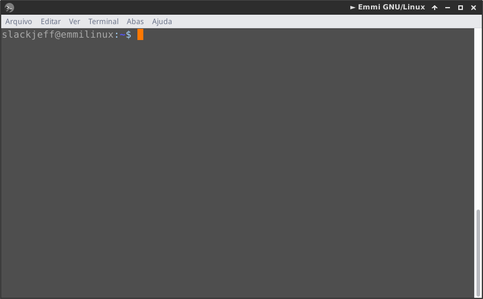
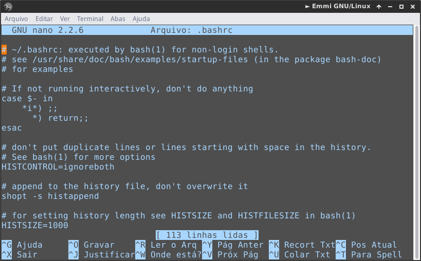
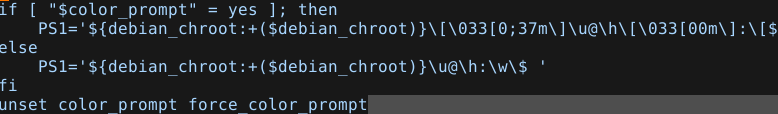
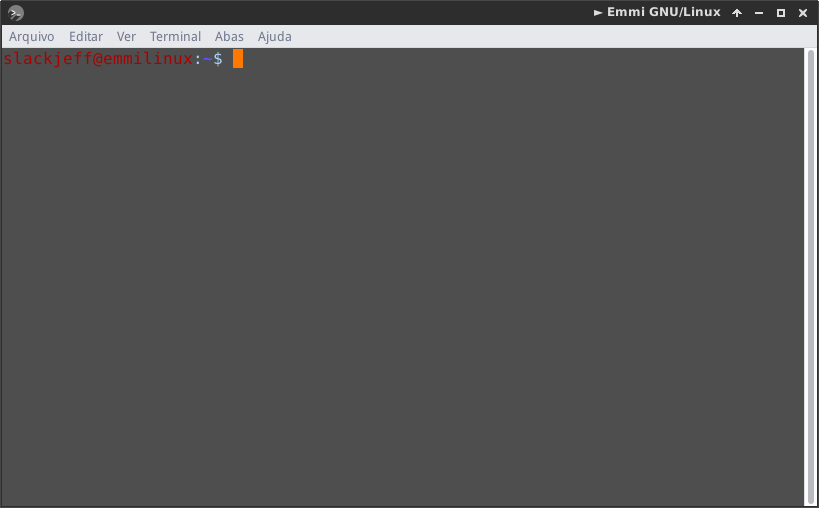

Personalize seu terminal
Que tal personalizar o seu terminal e deixar do seu jeito?
Vamos ao trabalho.

Vamos abrir o terminal e editar o arquivo .bashrc, ele está localizado em sua pasta pessoal.
Vamos rodar o comando
$ nano .bashrc

Nós podemos mudar a cor da linha de comandos para qualquer cor que esteja disponível. Para fazer isso, primeiro, encontraremos a seguinte string no nosso .bashrc:

E trocamos o 0;37m para 0;31m
Dê CTRL+O para salvar e abra outro terminal para ver a modificação.

Não gostou do vermelho? não tem problema. Escolha uma das cores abaixo e repita o procedimento:
Black 0;30
Dark Gray 1;30
Blue 0;34
Light Blue 1;34
Green 0;32
Light Green 1;32
Cyan 0;36
Light Cyan 1;36
Red 0;31
Light Red 1;31
Purple 0;35
Light Purple 1;35
Brown 0;33
Yellow 1;33
Light Gray 0;37
White 1;37
Tem um site muito legal, se chama Bash Generator, você pode criar uma linha personalizada do seu bash.
Vamos conferir?